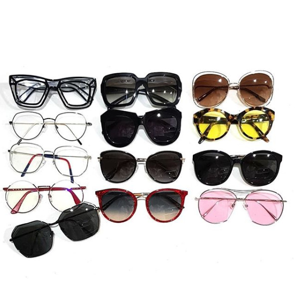
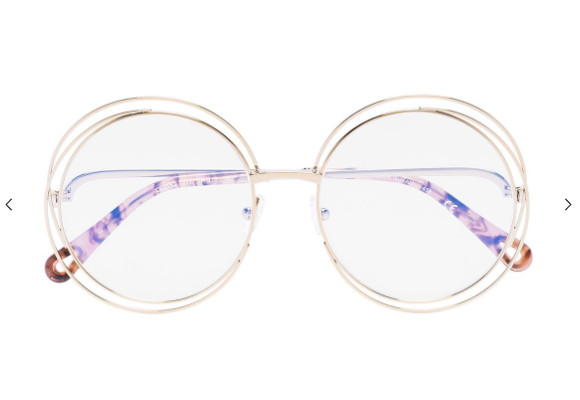
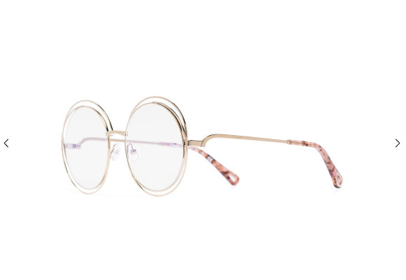

수비 스켈레톤 / 프라다 / 끌로에
로우로우 / 카렌워커 / 바톤페레이라
구찌 / 비비안웨스트우드 / 젠틀몬스터
마르니 / 구찌 / 젠틀몬스터
린다페로우
현재 안경 / 선글 몇개나 되는지 궁금해서 오밤중에 꺼내놓고 찍어봤습니다.
감상은 음.........더사도 되겠군 - 이었구요 ㅋㅋㅋㅋㅋㅋㅋ
해서 더 샀습니다 ㅋㅋㅋ
초반엔 선글라스를 엄청 찾아 다녔는데
눈이 나쁜 나능 선글을 쓰려면 렌즈를 껴야하는 귀찮음을 이기지 못하고 집에 모셔만 둬서
최근에는 특이한 쉐입의 안경 + 변색렌즈 로 관심사가 옮겨갔습니다 ^^;;;;;
요번에 지른건
끌로에 골드 라운드 더블 와이어 옵티컬 안경


사실 요 모델은 젤 위에 단체샷중 오른쪽 상단
끌로에 버터플라이 쉐입이랑 같은 제품라인 인데
그때 끌로에 카를리나 선글라스도
라운드 & 버터플라이 쉐입 둘다 구매했었더랬죠
근데 아무리 내가 오버사이즈를 좋아한다 한들 라운드타입 렌즈 62는 넘 부담스러워서
한번도 사용못하고 이베이행..........OTL
요 디자인이 인기가 많은지 꾸준히 나옵니다.
사실 요번 일본갈때 면세에서 요거 아님 젠몬을 하나 구매할려고 생각중이었는데
파페치에서 무뜬금(?) 50% + 30% 추가 세일을 하더라구요
정신줄 놓고 질렀습니다;;;
판매처는 영국 Browns
내일이나 모레쯤 받아볼 거 같습니다 :D :D
사랑해요 DHL!! 사랑해요 파페치!! ㅋㅋㅋㅋㅋㅋㅋ
요것도 변색렌즈를 넣어볼까 생각중이에요 :p
변색렌즈 넘 좋아 ;ㅂ; 대박 편해 ;ㅂ;
....................젠몬 하나만 더 사고 그만사야지;; 진짜로;;